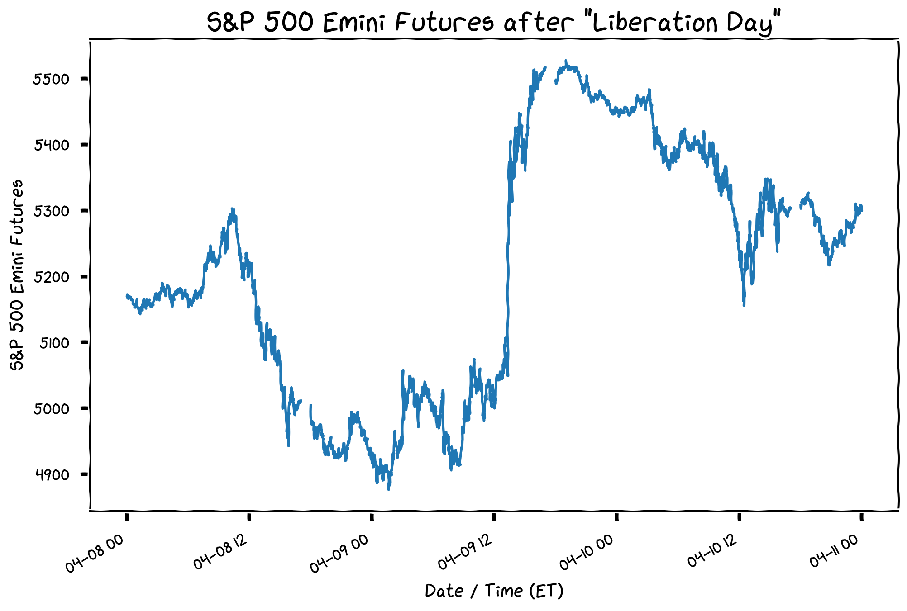
The Term Structure of Asset Return Informativeness
Oliver Boguth
Arizona State University
Adlai Fisher
University of British Columbia
Vincent Grégoire
HEC Montréal
Charles Martineau
University of Toronto
September 5, 2025
What is Information?


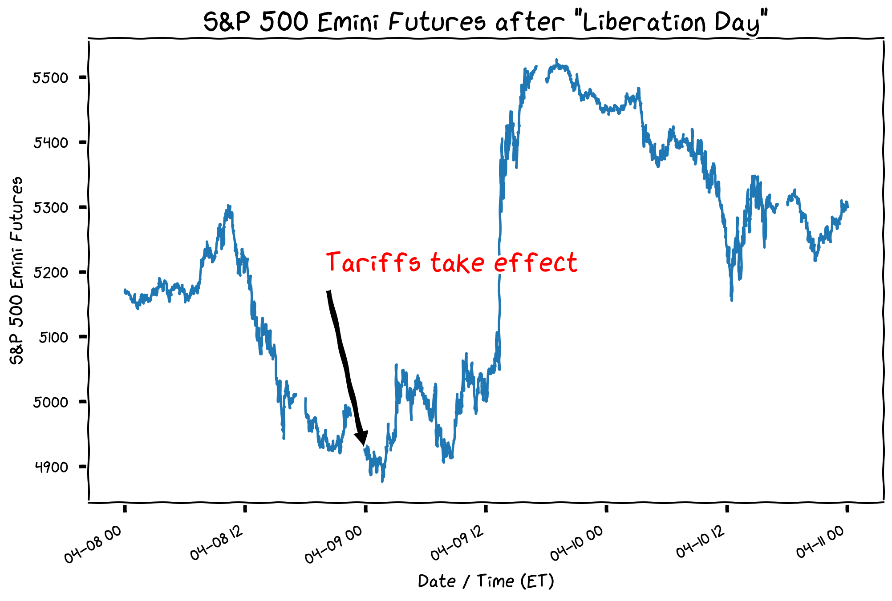
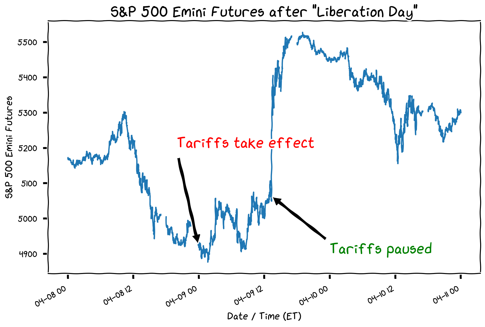
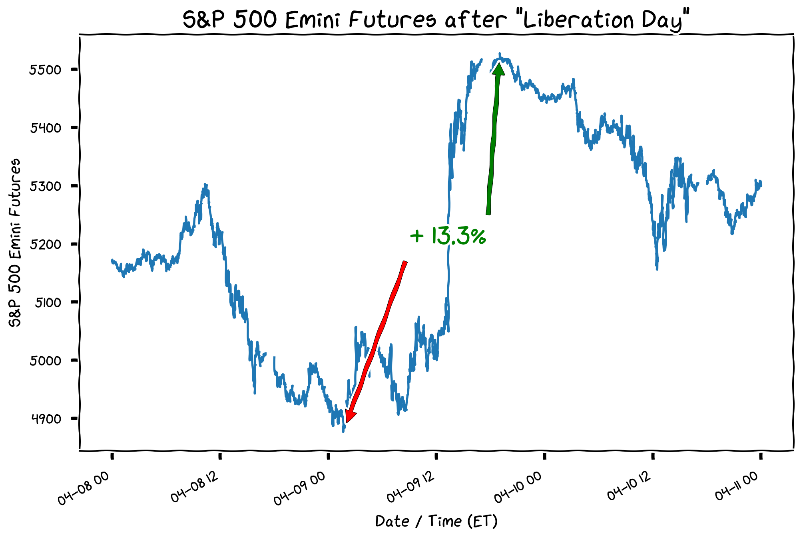
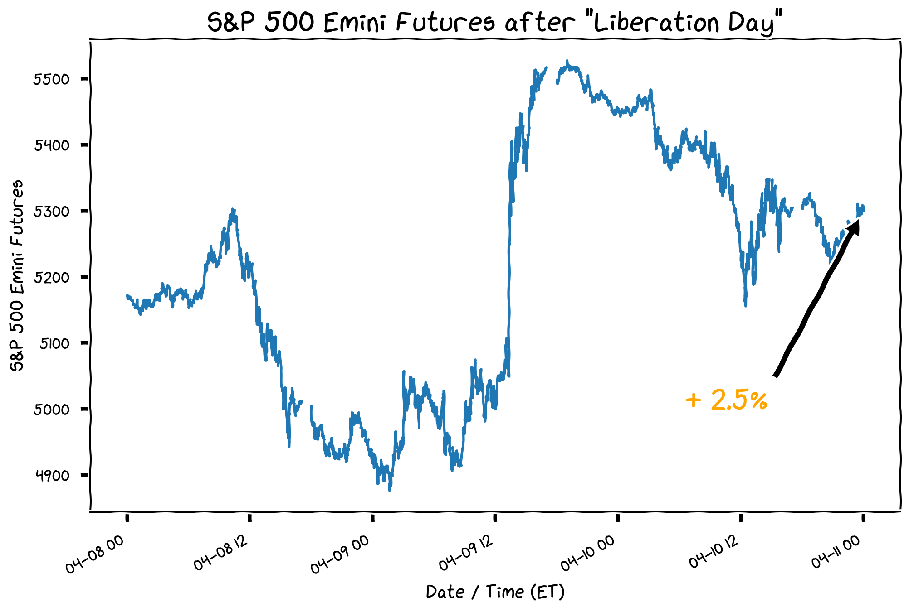
Term Structure of Asset Return Informativeness
- Prices move when news hits the market — but do they reflect information?
- If prices revert quickly, does the initial price movement matter?
- If prices underreact, is the initial price movement a good measure of informativeness?
- Event studies usually focus on immediate price reactions (signed).
- But not all return reactions reflect durable information.
- FOMC announcements often move markets.
- But most of that movement reverses within days. (Boguth et al. 2025)
- And some events impact prices over longer horizons.
- The content of earnings announcements impact long-horizon returns (Beaver 1968; Ball and Brown 1968; Bernard and Thomas 1989; Martineau 2021).
This paper
How much of an event-day return persists and conveys information about future prices?
- We introduce a new approach, relative informativeness, to measure how informative return reactions are — across time horizons.
- We use this approach to study:
- Earnings announcements
- Intraday vs overnight returns
- Macroeconomic news
- Earnings announcements
Results Preview
| Earnings Announcements | |
|---|---|
| Sample | Result |
| Aggregate market (SPY) | No persistent informativeness |
| Individual firms | Strong, persistent effects |
| Small firms | More underreaction than large firms |
| Overnight vs Intraday Returns | |
|---|---|
| Period | Result |
| 1994–2003 | Overnight returns significantly less informative |
| 2004–2013 | Narrowing gap between overnight and intraday informativenesss |
| 2014–2023 | Overnight returns as informative as intraday returns |
| Macroeconomic News | ||
|---|---|---|
| News Type | Affects... | At Horizons... |
| FOMC | Short maturities (briefly) | 1–5 days |
| GDP | Short maturities | 2–6 months |
| Unemployment | Long maturities | >3 months |
| CPI | Mixed, weak persistence | Mostly short-term |
| Minutes | Informative only selectively | Mid-range maturities |
Related Literature: Return Informativeness
- Informativeness
- Unbiasedness and price discovery
- Frenkel (1977), Hodrick (2014), Biais, Hillion, and Spatt (1999); Barclay and Hendershott (2003): Learning in trading
- Van Kervel and Menkveld (2019): HFTs and intraday price informativeness
- Akey, Grégoire, and Martineau (2022): Insider trading and price discovery
- Boguth et al. (2025): How news affects learning from prices
- We extend this work by estimating how much of a return reflects informational content at multiple horizons
- Frenkel (1977), Hodrick (2014), Biais, Hillion, and Spatt (1999); Barclay and Hendershott (2003): Learning in trading
- Attention and horizon bias
- Dessaint, Foucault, and Fresard (2024): Short-term data improves near-term forecasts, worsens long-term
- Farboodi et al. (2022): Attention biased toward large firms
- Farboodi and Veldkamp (2020): Announcements increase uncertainty
- Boguth et al. (2025), Hu et al. (2022): VIX response reflects informational risk
- Dessaint, Foucault, and Fresard (2024): Short-term data improves near-term forecasts, worsens long-term
Methodology
gantt
%% This is a comment
dateFormat mm
axisFormat %M
Event return :a1, 00, 1m
Horizon return :00, 11m
We estimate how event-day returns relate to longer-horizon returns:
r_{h,i} = \alpha_{h,\tau} + \beta_{h,\tau} \, r_{\tau,i} + \epsilon_i
- r_{\tau,i}: return during event window \tau
- r_{h,i}: return over horizon window h, where h begins at and includes \tau
We care mostly about \beta and R^2:
- \alpha: background drift (i.e. average risk premium)
- \beta: fraction of event return that persists
- R^2: strength of the relationship
Under the Null: Random Walk
If returns follow a random walk:
- \beta_{h,\tau} = 1: full incorporation, no predictability
- R^2_{h,\tau} should follow:
E[R^2_{h,\tau}] = \frac{\text{length of } \tau}{\text{length of } h}
This gives us a theoretical baseline — but in practice we use empirical benchmarks from pseudo-events to better match the auto-correlation and heteroskedasticity of returns.
Relative Informativeness
We define:
\Psi_{h,\tau,e} = \frac{R^2_{h,\tau,\text{event}}}{R^2_{h,\tau,\text{benchmark}}}
- Numerator: R^2 from actual event days
- Denominator: R^2 from benchmark days with same horizon h
\Psi tells us how much more (>1) or less (<1) informative an event is than a typical day.
Benchmark
- \Psi is a relative measure
- Choice of benchmark depends on what we want to measure
Potential benchmarks
- All days: informativess relative to an average day
- Non-event days: informativess relative to an average non-event day
- Alternate period: informativess relative to other period
- e.g. overnight vs intraday
- Untreated firms: informativess relative to untreated firms
- Useful for cross-sectional regressions
- Can use matched control to create sample
Relationship to Forecasting Regressions
Suppose the horizon excludes the event window:
r_{h',i} = \alpha_{h',\tau} + \beta_{h',\tau} \, r_{\tau,i} + \epsilon_i
Then:
\beta_{h,\tau} = 1 + \beta_{h',\tau}
- \beta_{h,\tau} \neq 1 implies the event return contains forecastable information about future returns.
Simulations
We use simulations to understand how \Psi and \beta behave under different return-generating processes.
- Simulate 30 years of daily returns
- Events randomly spaced (on average every 21 days)
- Horizon lengths: 5 to 252 days
- Compare different models: random walk, persistent shocks, reversals, etc.
Baseline: Random Walk
Daily returns are i.i.d. normal, event shocks are indistinguishable from non-event days
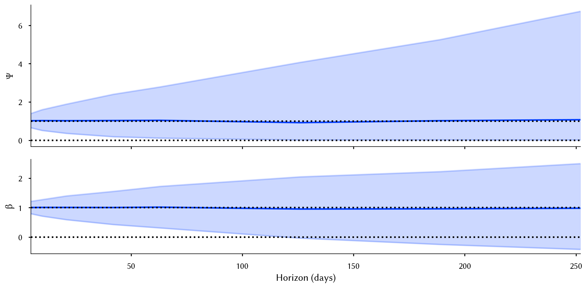
Large Shock, No Persistence
Event return = 10× average shock, no continuation or reversal

Persistent Small Shocks
Event return = 0.5× average shock, but strongly persistent (AR(1) = 0.95)
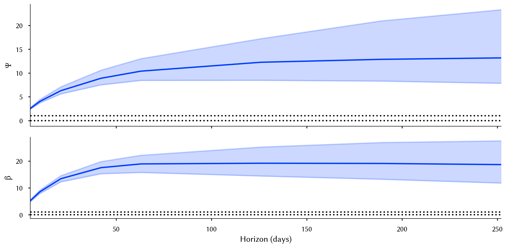
Large Shock with Reversal
Large event return, but designed to fully reverse over ~21 days, mimics discount rate shock

Statistical Inference
We use two complementary inference methods:
- Bootstrap inference: to construct confidence intervals for our estimates
- Randomization inference: to tests whether event days are more informative than random benchmark days
Bootstrap inference:
- Resample event days with replacement
- Resample benchmark days with replacement
- Re-estimate \alpha, \beta, and \Psi for each bootstrap sample
- Repeat (e.g. 1,000 times)
Randomization inference:
- Randomly assign event labels across sample
- Exact procedure varies with context
- Estimate \Psi for each reshuffled sample
- Generate distribution of \Psi under the null
- Compare observed \Psi to null distribution
Data
Sample period: 1994–2023 (plus 2024 returns for full 1-year horizons)
CRSP daily:
- S&P 500 ETF (
SPY) - daily returns + open/close price - U.S. Treasury ETFs (
SHY,IEF,TLH,TLT) - Individual CRSP stocks (for earnings)
Events:
- Earnings Announcements: I/B/E/S
- Macroeconomic News: Bloomberg
- Assigned to return window based on release timing
Related Literature : Earnings
Earnings Announcements: Market-Level Analysis
- SPY return behavior when >2% of S&P 500 firms report vs. typical days (18.3%)
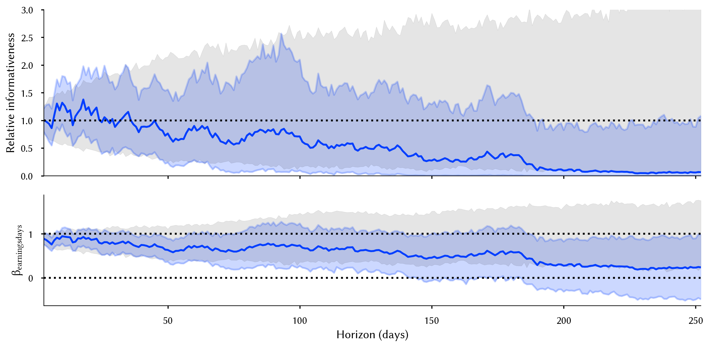
Firm-Level: Informative and Persistent
- Sample: 2,089 CRSP firms with ≥10 years of data and ≥40 earnings announcements
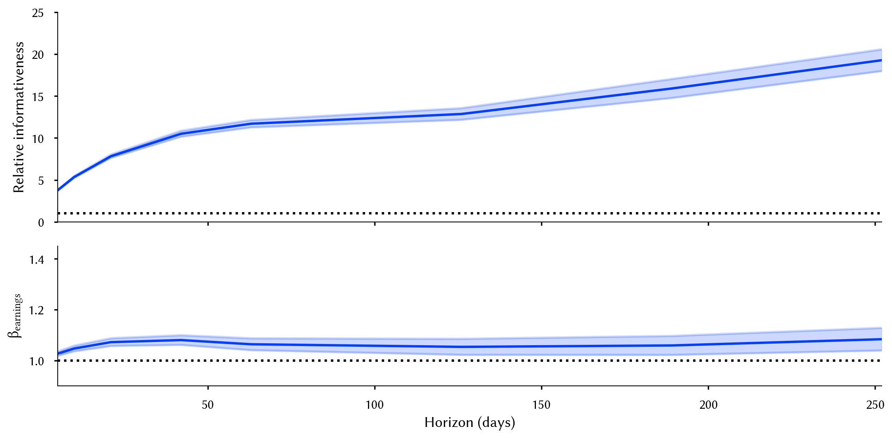
Small vs Large Firms
- Partition firms into small and large (median decile over time)
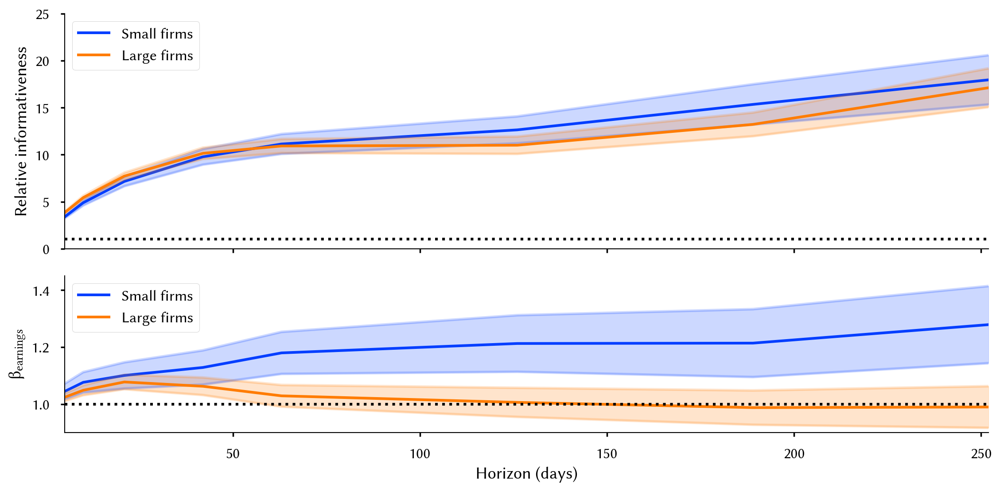
Related Literature : Overnight Returns
- Cliff, Cooper, and Gulen (2008): Equity premium driven by overnight returns
- Hendershott, Livdan, and Rösch (2020): CAPM holds overnight
- Boyarchenko, Larsen, and Whelan (2023); Bondarenko and Muravyev (2023): Positive drift in futures
- Branch and Ma (2012); Berkman et al. (2012): Reversals intraday
- Our contribution: isolate informativeness from drift or noise
Overnight vs Intraday Returns
- Overnight: Close-to-open
- Intraday: Open-to-close
| Descriptive Statistics | ||||||||||||
|---|---|---|---|---|---|---|---|---|---|---|---|---|
| Full sample | 1994-2003 | 2004-2013 | 2014-2023 | |||||||||
| Avg. r | σ(r) | Avg. |r| | Avg. r | σ(r) | Avg. |r| | Avg. r | σ(r) | Avg. |r| | Avg. r | σ(r) | Avg. |r| | |
| Daily returns | 4.0 | 118.5 | 79.3 | 4.1 | 119.3 | 86.4 | 2.8 | 128.1 | 81.1 | 4.5 | 110.8 | 72.4 |
| Intraday returns | 0.2 | 96.9 | 66.0 | −1.1 | 107.7 | 77.2 | 0.2 | 102.5 | 66.8 | 1.6 | 81.6 | 56.0 |
| Overnight returns | 3.8 | 67.6 | 42.6 | 5.3 | 61.3 | 41.1 | 2.7 | 70.3 | 44.3 | 2.9 | 72.0 | 43.2 |
| All values in basis points | ||||||||||||
- Full sample: 1994–2024
- Overnight returns contribute most of the mean daily return
- Intraday returns have higher volatility and larger absolute moves
- Overnight returns contribute most of the mean daily return
Overnight vs Intraday Informativeness

Overnight vs Intraday - By Decade

Overnight vs Intraday - Rolling 5-Year Estimates

What Changed?
- Rise of S&P E-mini futures (introduced 1997)
- Electronic trading
- Extended trading hours, especially post-2005.
- Reg NMS (2005) and algorithmic market structure
- Overnight trading became more active and informational
Related Literature: Macroeconomic News
- Macroeconomic news and price impact
- Focus on immediate reactions:
- Stocks (Bernanke and Kuttner 2005; Gilbert 2011)
- FX (Anderson et al. 2003; Andersen et al. 2007)
- Bonds (Fleming and Remolona 1999)
- Stocks (Bernanke and Kuttner 2005; Gilbert 2011)
- Persistence is limited:
- Boguth et al. (2025): FOMC announcements reverse within 10 days
- Boguth et al. (2025): FOMC announcements reverse within 10 days
- Our contribution: focus on term structure of informativeness
- Focus on immediate reactions:
- Asset pricing around macro announcements
- Lucca and Moench (2015): Pre-FOMC drift in equities
- Chaudhry (2020): Event timing and asset responses
- Kroencke, Schmeling, and Schrimpf (2021), Hu et al. (2022): FOMC-driven time-varying risk premia
- Liu, Tang, and Zhou (2022), Cujean and Jaeger (2023): Structural modeling of FOMC risks
- Our angle: measure how much lasting information these events contribute
- Lucca and Moench (2015): Pre-FOMC drift in equities
Do Macro Announcements Matter?
- Macro events are widely watched
- Generate volatility spikes
- But does volatility = information?
We study the informativeness of five major types of macro announcements:
- FOMC announcements
- FOMC minutes
- CPI (inflation)
- GDP
- Unemployment
We assess informativeness for both equities (SPY) and Treasuries (various maturities).
Macro Announcements
| Descriptive Statistics | |||||||||||||||||
|---|---|---|---|---|---|---|---|---|---|---|---|---|---|---|---|---|---|
| News | N | N/year | Avg. r | σ(r) | Avg. |r| | ||||||||||||
| SPY | SHY | IEF | TLH | TLT | SPY | SHY | IEF | TLH | TLT | SPY | SHY | IEF | TLH | TLT | |||
| Full sample | 3.8 | 0.7 | 1.4 | 1.3 | 1.7 | 119.6 | 9.5 | 43.4 | 66.5 | 91.3 | 80.0 | 6.4 | 32.6 | 48.8 | 68.1 | ||
| Macro. Ann. | 1,465 | 48.9 | 9.5 | 1.2 | 3.8 | 2.6 | 4.8 | 120.5 | 11.2 | 49.7 | 69.9 | 96.1 | 83.9 | 7.7 | 37.6 | 52.1 | 73.5 |
| FOMC | 239 | 8.0 | 26.5 | 2.7 | 9.3 | 13.7 | 12.2 | 115.8 | 12.3 | 55.9 | 76.1 | 95.4 | 86.2 | 8.9 | 40.5 | 55.9 | 73.8 |
| FOMC Minutes | 238 | 7.9 | 0.5 | 0.5 | −2.2 | −2.9 | −5.4 | 105.7 | 8.4 | 40.1 | 60.5 | 87.3 | 73.0 | 6.2 | 31.3 | 46.0 | 67.1 |
| Inflation | 360 | 12.0 | 0.3 | 1.1 | 7.4 | 8.6 | 13.0 | 129.8 | 10.6 | 43.4 | 64.8 | 88.9 | 82.5 | 6.9 | 33.7 | 47.9 | 68.3 |
| GDP | 337 | 11.2 | 9.8 | 2.6 | 7.5 | 7.4 | 13.1 | 117.6 | 8.1 | 43.3 | 61.6 | 85.7 | 82.2 | 6.1 | 32.7 | 45.4 | 66.3 |
| Unemployment | 360 | 12.0 | 13.8 | −0.3 | −3.2 | −10.7 | −9.1 | 123.3 | 14.1 | 59.6 | 79.6 | 113.8 | 92.4 | 10.0 | 47.8 | 63.2 | 89.9 |
| All values in basis points | |||||||||||||||||
S&P 500 - All macro announcements
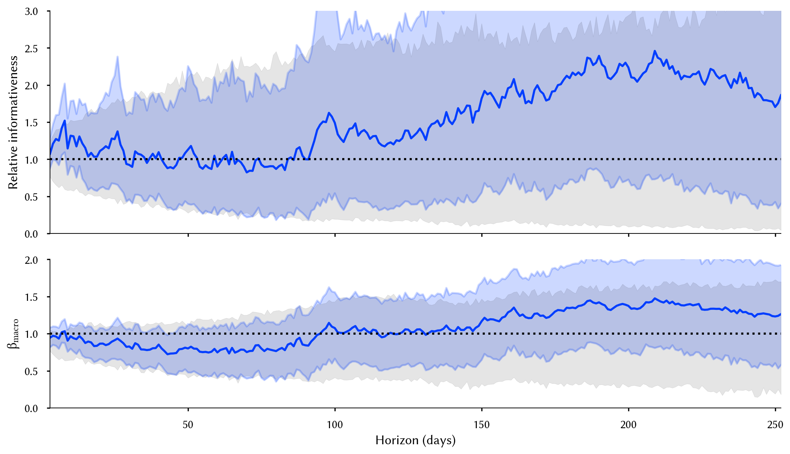
S&P 500 - By Decade

Treasuries
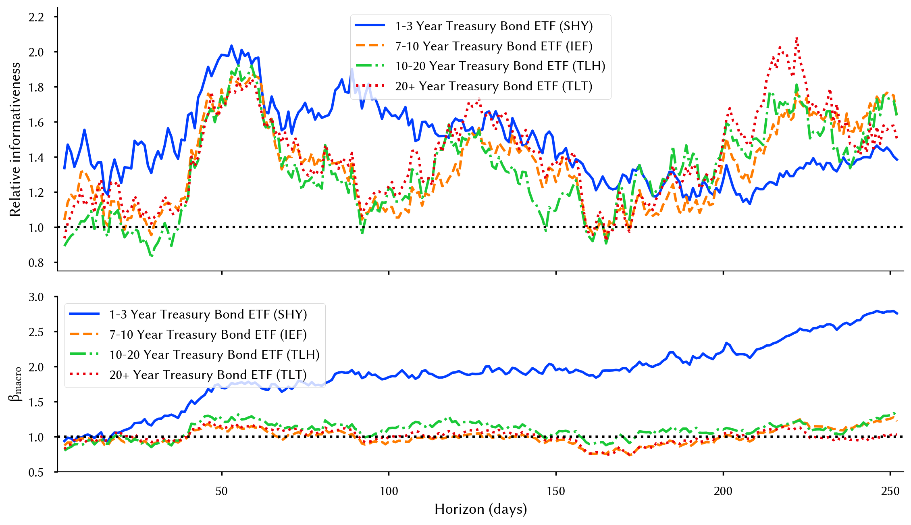
Maturities vs. Horizons

Takeaways
- Macro news ≠ persistent signal
- Use of macro days in event studies must consider:
- Horizon
- Asset class
- Type of announcement
- Treasury responses reflect fundamental repricing; equities often reflect noise, sentiment, or other “temporary” factors
Concluding Remarks
We introduce Relative Informativeness (\Psi): a measure of how much of an event day’s return reflects durable information. It’s applicable across event types, horizons, and asset classes, and focuses on explanatory power rather than simply price response.
Empirical Findings: Earnings are mean-reverting at the market level but informative firm-level; overnight reactions are now as strong as intraday (post-2010s); and macro news exhibits varying persistence.
Future work: Applying \Psi to all types of news and/or events:
- Earnings (more in depth)
- Corporate events
- Intraday price movements
- International news
Ultimately, use \Psi to ask: Are returns informative about future prices?
Thank you!
| www.vincentgregoire.com | |
| vincent.gregoire@hec.ca | |
| www.linkedin.com/in/vincent-gr%C3%A9goire-3234b412/ | |
| @vgreg | |
| vincent.codes.finance | |
| @VincentCodesFinance |

References
Akey, Pat, Vincent Grégoire, and Charles Martineau. 2022. “Price Revelation from Insider Trading: Evidence from Hacked Earnings News.” Journal of Financial Economics 143 (3): 1162–84. https://doi.org/10.1016/j.jfineco.2021.12.006.
Andersen, Torben G., Tim Bollerslev, Francis X. Diebold, and Clara Vega. 2007. “Real-Time Price Discovery in Global Stock, Bond and Foreign Exchange Markets.” Journal of International Economics 73 (2): 251–77.
Anderson, Torben G., Tim Bollerslev, Francis X Diebold, and Clara Vega. 2003. “Micro Effects of Macro Announcements: Real-Time Price Discovery in Foreign Exchange.” American Economic Review 93 (1): 38–62.
Bai, Jennie, Thomas Philippon, and Alexi Savov. 2016. “Have Financial Markets Become More Informative?” Journal of Financial Economics 122 (3): 625–54.
Ball, Raymond, and Philip Brown. 1968. “An Empirical Evaluation of Accounting.” Journal of Accounting Research.
Barclay, Michael J., and Terrence Hendershott. 2003. “Price Discovery and Trading After Hours.” Review of Financial Studies 16 (4): 1041–73. https://doi.org/10.1093/rfs/hhg030.
Beaver, William H. 1968. “The Information Content of Annual Earnings Announcements.” Journal of Accounting Research, 67–92.
Berkman, Henk, Paul D Koch, Laura Tuttle, and Ying Jenny Zhang. 2012. “Paying Attention: Overnight Returns and the Hidden Cost of Buying at the Open.” Journal of Financial and Quantitative Analysis 47 (4): 715–41.
Bernanke, Ben S., and Kenneth N. Kuttner. 2005. “What Explains the Stock Market’s Reaction to Federal Reserve Policy?” The Journal of Finance 60 (3): 1221–57.
Bernard, Victor L, and Jacob K Thomas. 1989. “Post-Earnings-Announcement Drift: Delayed Price Response or Risk Premium?” Journal of Accounting Research 27: 1–36.
Biais, Bruno, Pierre Hillion, and Chester Spatt. 1999. “Price Discovery and Learning During the Preopening Period in the Paris Bourse.” Journal of Political Economy 107 (6): 1218–48. https://doi.org/10.1086/250095.
Boguth, Oliver, Adlai Fisher, Vincent Gregoire, and Charles Martineau. 2025. “Price Informativeness and FOMC Return Reversals.” Available at SSRN 4131740.
Bondarenko, Oleg, and Dmitriy Muravyev. 2023. “Market Return Around the Clock: A Puzzle.” Journal of Financial and Quantitative Analysis 58 (3): 939–67. https://doi.org/10.1017/S0022109022000783.
Boyarchenko, Nina, Lars C Larsen, and Paul Whelan. 2023. “The Overnight Drift.” The Review of Financial Studies 36 (9): 3502–47. https://doi.org/10.1093/rfs/hhad020.
Branch, Ben S, and Aixin James Ma. 2012. “Overnight Return, the Invisible Hand Behind Intraday Returns?” Journal of Applied Finance 22 (2).
Chaudhry, Aditya. 2020. “The Causal Impact of Macroeconomic Uncertainty on Expected Returns.” SSRN Electronic Journal. https://doi.org/10.2139/ssrn.3711584.
Cliff, Michael, Michael J. Cooper, and Huseyin Gulen. 2008. “Return Differences Between Trading and Non-Trading Hours: Like Night and Day.” Working Paper 32.
Cujean, Julien, and Samuel Jaeger. 2023. “Asset Pricing on FOMC Announcements.” SSRN Electronic Journal. https://doi.org/10.2139/ssrn.4374963.
———. 2025. “Recovering Price Informativeness From.” Working Paper.
Dávila, Eduardo, and Cecilia Parlatore. 2024. “Identifying Price Informativeness.” Review of Financial Studies, Forthcoming.
Dessaint, Olivier, Thierry Foucault, and Laurent Fresard. 2024. “Does Alternative Data Improve Financial Forecasting? The Horizon Effect.” The Journal of Finance 79 (3): 2237–87. https://doi.org/10.1111/jofi.13323.
Farboodi, Maryam, Adrien Matray, Laura Veldkamp, and Venky Venkateswaran. 2022. “Where Has All the Data Gone?” The Review of Financial Studies 35 (7): 3101–38.
Farboodi, Maryam, and Laura Veldkamp. 2020. “Long-Run Growth of Financial Data Technology.” American Economic Review 110 (8): 2485–2523.
Fleming, Michael J., and Eli M. Remolona. 1999. “Price Formation and Liquidity in the US Treasury Market: The Response to Public Information.” The Journal of Finance 54 (5): 1901–15.
Frenkel, Jacob A. 1977. “The Forward Exchange Rate, Expectations, and the Demand for Money: The German Hyperinflation.” The American Economic Review 67 (4): 653–70.
Gilbert, Thomas. 2011. “Information Aggregation Around Macroeconomic Announcements: Revisions Matter.” Journal of Financial Economics 101 (1): 114–31.
Hendershott, Terrence, Dmitry Livdan, and Dominik Rösch. 2020. “Asset Pricing: A Tale of Night and Day.” Journal of Financial Economics 138 (3): 635–62.
Hodrick, Robert. 2014. The Empirical Evidence on the Efficiency of Forward and Futures Foreign Exchange Markets. Routledge.
Hu, Grace Xing, Jun Pan, Jiang Wang, and Haoxiang Zhu. 2022. “Premium for Heightened Uncertainty: Explaining Pre-Announcement Market Returns.” Journal of Financial Economics 145 (3): 909–36.
Kroencke, Tim A., Maik Schmeling, and Andreas Schrimpf. 2021. “The FOMC Risk Shift.” Journal of Monetary Economics 120 (May): 21–39. https://doi.org/10.1016/j.jmoneco.2021.02.003.
Liu, Hong, Xiaoxiao Tang, and Guofu Zhou. 2022. “Recovering the FOMC Risk Premium.” Journal of Financial Economics 145 (1): 45–68. https://doi.org/10.1016/j.jfineco.2022.04.005.
Lucca, David O., and Emanuel Moench. 2015. “The Pre-FOMC Announcement Drift.” The Journal of Finance 70 (1): 329–71. https://doi.org/10.1111/jofi.12196.
Martineau, Charles. 2021. “Rest in Peace Post-Earnings Announcement Drift.” Critical Finance Review.
Savor, Pavel, and Mungo Wilson. 2016. “Earnings Announcements and Systematic Risk.” Journal of Finance 71 (1): 83–138.
Van Kervel, Vincent, and Albert J. Menkveld. 2019. “High-Frequency Trading Around Large Institutional Orders.” The Journal of Finance 74 (3): 1091–1137. https://doi.org/10.1111/jofi.12759.

Universidad de los Andes - September 2025